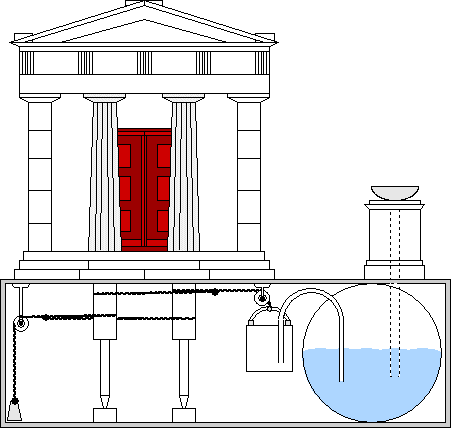

Если мы встречаем в тексте величину, измеренную в пальмах, надо быть начеку. Варианты значений пальма настолько многочисленны, что легко можно оконфузиться при его переводе в наши традиционные единицы. А все из-за многозначности толкований значения корня palm. То, что palm означает пальму или что-то похожее на нее сомнений ни у кого не вызывает. И то, что ладонь человеческой руки с растопыренными пальцами напоминает пальму, мы знали и до «Джентльменов удачи». И то что эту ладонь очень удобно использовать в измерениях длины, так как эта мера всегда при нас, тоже всем ясно. Так в чем же проблема? А в том, чтобы определиться, какую часть ладони взять за единицу, назвав ее пальм. На схеме, приведенной нами ранее, это величина, обозначенная номером 3, представляет собой ширину ладони сразу под пальцами. Иногда термином palm называли чуть меньшую величину, равную ширине четырех сложенных вместе пальцев. Часто термин palm соответствовал совсем другой величине – длине ладони от запястья до кончика среднего пальца.
Пожалуй, наиболее обстоятельно и определенно об этой величине сказано у Герона Александрийского. Этот ученый муж настолько интересен (безотносительно к метрологии), что нельзя не сказать о нем несколько слов.
 |
Схема автомата Герона, который открывает двери храма при горящем огне на алтаре и закрывает, когда огня нет. Взято из Animated Image by P. Hausladen, RS Vöhringen |
Имя Герона на слуху у всех, кто хоть в какой-то степени соприкасался с математикой. Известная формула определения площади треугольника по трем его сторонам носит его имя. Еще более известен Герон любителям истории техники. Без чертежей его механизмов не обходится ни одна работа в этой области. И при всем этом фигура Герона загадочна и противоречива, как и оценки его роли в развитии науки и техники.
Прежде всего, не известно даже приблизительно время его жизни. Долгое время указывался диапазон между 200 г. до н.э и 300 г. н.э. Жизнь длиной в полтысячи лет! Некоторые историки пытались конкретизировать дату, но достоверных доказательств в подтверждение своих версий не представили. Наиболее правдоподобным выглядит гипотеза Нейгебауэра, согласно которой Герон жил в I веке н.э. Основанием для этого послужили следующие факты. В Героновой книге «Диоптра» изложен способ определения разницы во времени между Римом и Александрией при помощи наблюдения солнечного затмения. Нейгебауэр заметил, что приведенное для примера затмение, которое было «за 10 дней до весеннего равноденствия» было вероятно затмением 62 года. Впрочем, и эта гипотеза сейчас оспаривается.
Труды Герона, важнейший из которых «Механика» сохранился полностью в переводе на арабский, представляют собой что-то вроде энциклопедии по прикладной геометрии и механике. Нас будет интересовать сейчас «Геометрика» Герона, хотя и высказываются предположения, что этот труд составлен не самим Героном, а возник в его школе в Александрии. Язык «Геометрики» краток и точен, однако указаний на источники там не содержится. Поэтому до сих пор идут споры, кому принадлежат приведенные там формулы и их доказательства. Кантор, например, полагал, что знаменитую «формулу Герона» можно приписать самому Герону, Б.Л. Ван дер Варден же по этому поводу пишет: «это то же самое, как если бы мы приписали самому Хютте все те формулы из его «Карманной книжки инженера», которые даны без упоминания об источнике!». Далее следует примечательное замечание Ван дер Вардена, не оставляющее никаких сомнений относительно его отношения к Герону:
«Да в конце концов все это не так уж и важно. Интересны только великие идеи человечества, а не их разведение водой в учебниках и собраниях задач. Будем радоваться, что мы обладаем гениальными творениями Архимеда и Аполлония, и не будем печалиться об утрате бесчисленных расчетных книжек типа Героновских.»
Вот вам и отношение к культурному наследию прошлого!
Оставим в стороне эти ристалища на почве всемирного значения творчества отдельных личностей, вернемся к нашей метрологии.
С большим трудом удалось мне отыскать корни многих названий антропоморфных единиц измерения длины в греческом тексте «Геометрики» Герона, который издан под редакцией Fridericus Hultsch (Heronis Alexandrini. Geometricorum et stereometricorum reliquiae. Berolini apud Weidmannos, 1875)
Приведу некоторые извлечения из этого текста:
«Меры проистекают из пропорций следующих частей тела человека: палец, сустав пальца, ладонь, растопыренные пальцы руки, стопа, предплечье (локоть), шаг, размах рук или сажень.
Самой маленькой из этих мер является палец (дактиль – δάκτυλος), который также называется единицей (монадой – μονὰς). (Этот термин следует отличать от философской монады, которую прославил в своих трудах Лейбниц.)
Следующей по величине мерой является сустав (кондиль – κόνδυλος), равный двум пальцам, или расстоянию между двумя нижними суставами большого пальца.
Далее в иерархии следует пальм или палеста (παλαστή), которая называется также, по словам Герона, τέταρτον (четверть), так как она составлена из четырех пальцев, или потому, что равняется четверти стопы, а также τρίτον (треть), т.к. она равняется одно третьей части спитамы, пяди.
Лихас (λιχάς), или более правильно, дихас(διχάς) представляет собой расстояние между концами большого и указательного пальцев и есть не что иное, как малая пядь. В данной работе Герон указывает на ее значение, равное восьми пальцам (дактилям) или двум палестам. Но это маловато для малой пяди, поэтому более вероятным является ее значение, которое встречается также у Герона, но в другой работе, равное двум с половиной палестам, пяти кондилям или 10 дактилям.
Спитама (σπιθαμή) равняется трем палестам или двенадцати дактилям. Равна она расстоянию между концами большого пальца и мизинца, т.е. пяди. (У римлян она получила название большая пальма, или римская пальма - palma. Поэтому при работе со старыми источниками следует быть осторожным, отличать пальм = палеста от римского пальма.)
Стопа (πούς – пус, фут) равняется 1 1/3 спитамы, 4 палестам, 8 кондилям или 16 дактилям.
Остановимся пока на этом, поскольку для новых текстов нужны будут свежие силы.